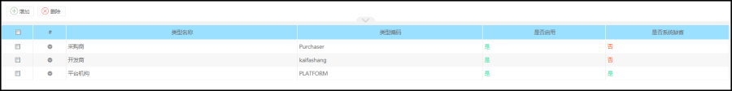
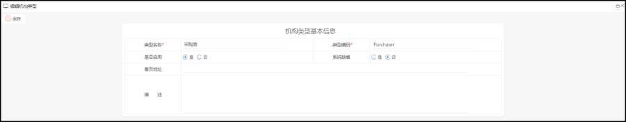
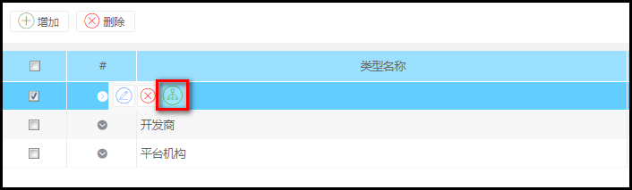
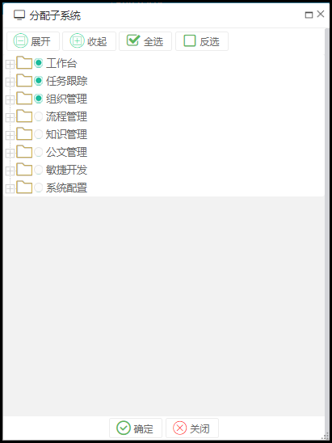

功能描述
平台的机构类型为平台的不同机构类型，可进行扩展定义，如为平台增加供应商、采购商、运营商等。后续增加机构时，可指定具体租户的机构类型，不同的机构类型可增设不同的功能权限，以支持灵活的功能授权处理。
操作步骤

添加机构类型：
操作：点击【添加】按钮，进入如下界面。

授权类型子系统
在机构类型列表中，直接点击某一行的类型，在操作列中，选择【授权】按钮，如下：

然后选择对应的子系统，点击确认按钮则可。

完成该动作后，表示该类型的机构管理员子登录进来后，可以看到这些子系统的全部子菜单。